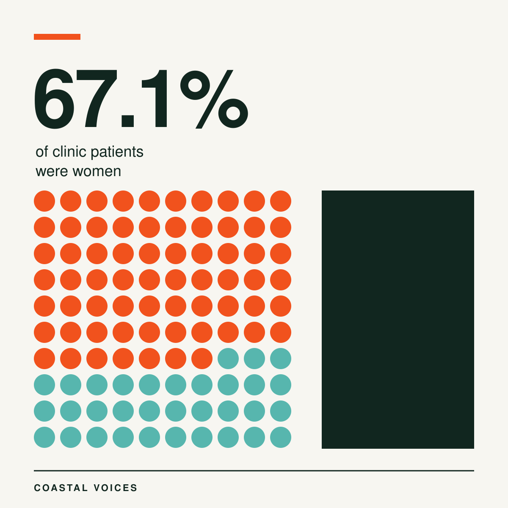
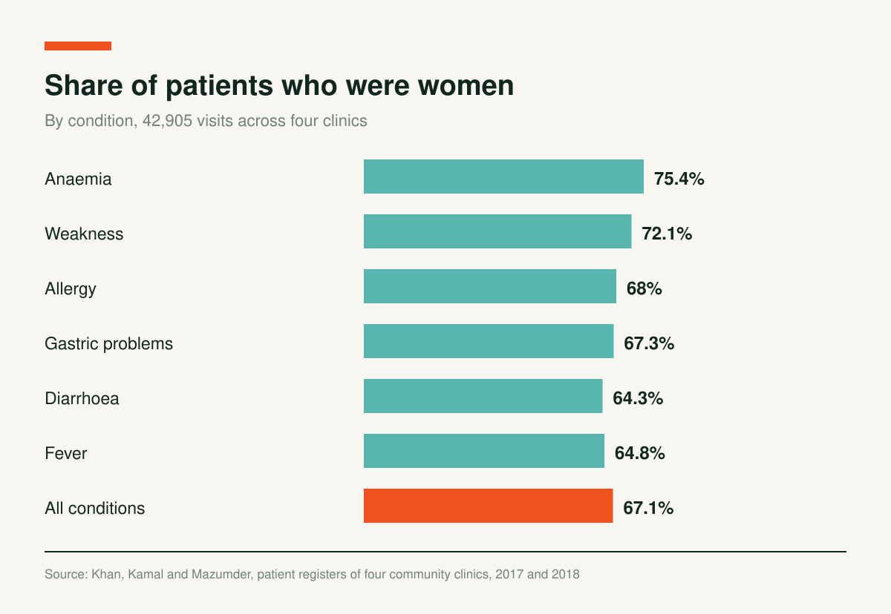
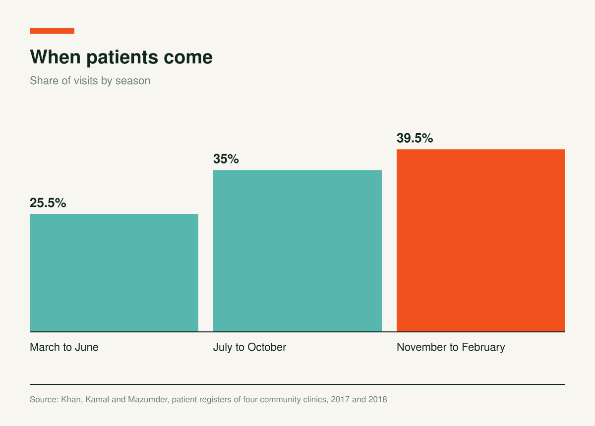

Two of Every Three Patients at Four Coastal Clinics Were Women

Pankhali and Tiladanga in Dacope, Khulna, and Gabura and Nurnagar in Shyamnagar, Satkhira, sit close to the coast. Researchers describe them as areas hit hard by climate change and natural disasters. In each union, one community clinic is where a sick person goes first. The government set up the clinics to bring care to the doorstep, with one clinic for about 6,000 people.
Mohammed Moniruzzaman Khan, Abu Hena Mostofa Kamal and Nurunnahar Mazumder read two years of patient registers from the four clinics, January 2017 to December 2018. They also interviewed 13 health workers and 20 patients.

42,905 Visits
Women made up 67.1% of patients, two to three times the number of men. More than half of all patients, 52.5%, were aged 25 to 49, and 33.5% were 50 or older. The most common complaints were abdominal pain (14%), physical weakness (13.4%), gastric problems (8.72%) and respiratory problems (7.5%).

When the Clinics Fill Up
Visits peaked between November and February, with 39.5% of the total. July to October followed with 35%, and March to June was the quietest at 25.5%.

Medicine Runs Out Before the Quarter Does
Health workers described supply problems. Clinics receive three months of medicine at a time. One provider said: “If we want to maintain 100% medicine dose for each patient, we will not be able to serve 15 days with the given supplies.”
The clinics reported that stocks of vitamin tablets had grown while medicine for dysentery and scabies had shrunk, even though providers said those conditions are common on the coast.
Who Walks In
The patients interviewed had a median family income of 4,000 taka a month and lived an average of 1.97 kilometres from the clinic. Thirteen of the 20 were illiterate. They value the clinics for being close and free. For complications, many prefer an upazila or district hospital, but cost keeps some from going.